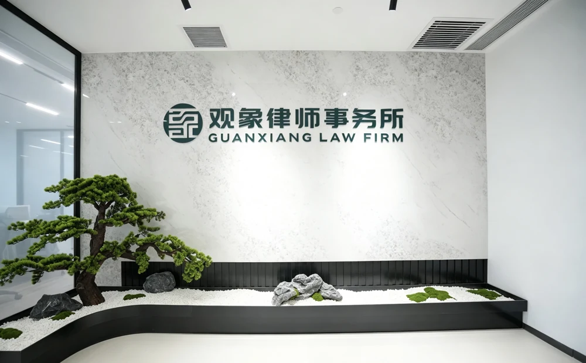

业主维权
物业纠纷诉讼与仲裁、物业费争议处理、公共收益追回、业主知情权、业主大会决议撤销之诉、物业服务质量纠纷等。
了解物业纠纷亲办案例
看看我如何为业主解决问题。
关于我
曾在物业集团法务部任职，深谙物业公司的运营逻辑与诉讼策略。如今，把这份经验用于业主一方，提供务实、可落地的法律服务。
我是一名专注于物业管理法律服务的执业律师，执业十年来，一直深耕在物业管理法律服务领域。我的服务出发于法律而不局限于法律，亲自在物业一线参与各类实操工作和业主组织建设工作，是我能够提供更优质服务的底气。观象律师事务所创始合伙人、高级合伙人，毕业于山东大学法学专业，曾任职于司法行政部门及法院审判部门，对司法实务与行政管理有着深刻理解。
执业以来，我深耕物业管理法律领域，长期服务于业主、业主委员会、筹备组、物业管理委员会等业主组织。曾在物业集团法务部任职、长期处理物业公司一方事务，深知物业运营逻辑与诉讼套路——这份"懂内幕"的经历，是我帮业主维权的底气。
我相信法律服务的价值在于解决问题、预防风险，而非制造矛盾。每一个案件、每一次咨询，我都力求站在客户角度，提供务实、高效、可落地的解决方案。
